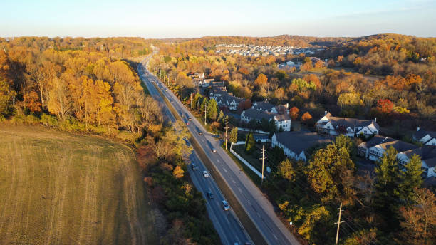

Delaware County, also known as Delco, is the third-smallest county in Pennsylvania by area, covering 191 square miles. The county seat is Media.
Created in 1789, Delaware County is in the Commonwealth of Pennsylvania and home to over 576,000 residents.
A large portion of the stream runs through Ridley Creek State Park, which is located entirely within Delaware County.
